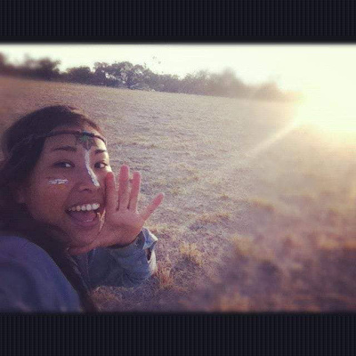

I met Noel in Pokhara, Nepal through a post at The Juicery Cafe. I contacted him.
It was an awesome learning experience that I had with Noel.
Noel knows what he is doing. He would sit down with me, ask me questions and start keying things on his laptop (Very professional!!!).
After chatting with him, he got an idea of what I needed to practice. My intention was to ground myself, think positive and to have a clearer mind. He really made an effort to prepare the lesson for me.
When I went to our session. He made the room super nice, cozy and fragrant with incense. He is a good teacher who is into details. I felt so great after the first session. The experience after Kundalini Yoga was very nourishing, I asked him to teach me again the day after.
Noel is a well experienced teacher who teaches from his heart. Plus, he learnt a lot from different teachers. His lesson is unique, nourishing, light and fun. He would try his best to teach you. All you need to do is to go with an open heart. I’m sure you would gain a lot out of his teaching.
After he left Pokhara. We still kept in touch. He always supports me emotionally when I am stressed, giving me guidance & is super kind.
Thank you for ya teachings. I will definitely see you soon :)
It was an awesome learning experience that I had with Noel.
Noel knows what he is doing. He would sit down with me, ask me questions and start keying things on his laptop (Very professional!!!).
After chatting with him, he got an idea of what I needed to practice. My intention was to ground myself, think positive and to have a clearer mind. He really made an effort to prepare the lesson for me.
When I went to our session. He made the room super nice, cozy and fragrant with incense. He is a good teacher who is into details. I felt so great after the first session. The experience after Kundalini Yoga was very nourishing, I asked him to teach me again the day after.
Noel is a well experienced teacher who teaches from his heart. Plus, he learnt a lot from different teachers. His lesson is unique, nourishing, light and fun. He would try his best to teach you. All you need to do is to go with an open heart. I’m sure you would gain a lot out of his teaching.
After he left Pokhara. We still kept in touch. He always supports me emotionally when I am stressed, giving me guidance & is super kind.
Thank you for ya teachings. I will definitely see you soon :)
Tata Tse, Tata omm baby, Hong Kong/Thailand

Noel's class was very challenging but he was able to adapt it to the abilities of the group. There was a good mixture of movement, chanting and relaxing meditation. I felt relaxed afterwards. I liked that he also gave us copies of the exercises so we could practice them at home if we wanted.
Marie Nahlik, English teacher, Thailand/USA

I once took a Kundalini Yoga class by Noel in India. It was my first experience. It wasn't like other yoga, I felt the need for strong patience. I think it will help improve not only the body but also the perseverance and concentration of the spirit.
Kokko, Traveler, Japan
Kundalini Yoga with Noel was a great experience and learning. Even a beginner's class was very intense.
Mohit Chaudhary, Kundalini Experience, India

I had been hearing about Kundalini Yoga and its benefits for a while now and before taking Noel’s class, I always thought it was a bit cultish. I even took a class in New York before and felt a bit uncomfortable in the class.
Noel’s class was not like that at all. He explained things in a clear manner that any regular person can relate to and I felt so at ease throughout the class. This allowed me to fully enjoy and experience what Kundalini Yoga can do for your mind, body, and soul.
I felt so “alive” throughout my body immediately after the class and I’ve been hooked to the practice since. Thank you Noel for making this practice easy to understand and approachable!
Noel’s class was not like that at all. He explained things in a clear manner that any regular person can relate to and I felt so at ease throughout the class. This allowed me to fully enjoy and experience what Kundalini Yoga can do for your mind, body, and soul.
I felt so “alive” throughout my body immediately after the class and I’ve been hooked to the practice since. Thank you Noel for making this practice easy to understand and approachable!
Maggie Wu, Entrepreneur, Canada/Hong Kong/Taiwan/USA

Very peaceful and restful, I’d love to take the lesson again
Shirley Lau, Spiritual Guru, China/Hong Kong
It was a really wonderful experience to be present with breath, mind and body led by Noel. I was fully energized and could feel my physical body unblocked and circulated instantly. Noel was very present, and led with clarity and care. What a delight!
Alexis Quek, Defender of the People, Singapore
Love the inner peace it brings to me by the end of class.
Cyn Tok, Student, Singapore

The last time I did yoga was a few years back, and even then I hadn't done it for very long and would not consider myself easily comfortable with new moves or instructions!
There is very little quite like having Noel guide you through a session of Kundalini Yoga - time passes by much quicker than you expect - and frankly there is so much calm and tranquility during the session, you really do walk out feeling like (almost) a newborn.
I remember I had had some trouble sleeping for some time before I started with Noel, and I absolutely slept like a baby that night.
I'm pretty hooked on this now, and looking forward to the next time and the time after (you get it) I'll get to reset with Noel again. There is nothing quite like it - you'll fill more energetic, lighter on your feet, with a bounce in your step for the few days after!
There is very little quite like having Noel guide you through a session of Kundalini Yoga - time passes by much quicker than you expect - and frankly there is so much calm and tranquility during the session, you really do walk out feeling like (almost) a newborn.
I remember I had had some trouble sleeping for some time before I started with Noel, and I absolutely slept like a baby that night.
I'm pretty hooked on this now, and looking forward to the next time and the time after (you get it) I'll get to reset with Noel again. There is nothing quite like it - you'll fill more energetic, lighter on your feet, with a bounce in your step for the few days after!
Benjamin Lim, Fun Sprinkler/Legal Counsel, Singapore
As a novice to Kundalini Yoga my first experiences were very uplifting and energizing. I felt a strong meditative aspect which enriched my practice. I felt such a strong energy from Noel too. I will definitely like to attend more classes.
Anju Cawthra, Designer/Maker, England/Singapore
I have heard great things about Noel and decided to join despite not knowing what Kundalini Yoga is. The practices Noel taught us seemed quite simple at first but it really pushed my limits. It was a great workout complemented with tranquil and deep relaxing breaks for the mind and body.
Later that night, I even sobbed in my dreams (which I haven't for ages). Noel assured me it was no coincidence, as we did a lot of clearing at the class. The dreams were indeed related to some of my significant childhood emotions which I needed to let go.
Thanks Noel for easing me into it and reminding me to be aware and embrace all my emotions.
Later that night, I even sobbed in my dreams (which I haven't for ages). Noel assured me it was no coincidence, as we did a lot of clearing at the class. The dreams were indeed related to some of my significant childhood emotions which I needed to let go.
Thanks Noel for easing me into it and reminding me to be aware and embrace all my emotions.